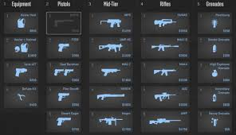

Buy types (simple definitions)
- Full buy: rifles + armor + enough utility to run a plan.
- Eco: buy very little to save for a strong next round.
- Force buy: spend now to try to steal a round.
Simple rule: if you’re forcing, you need a plan (stack, fast hit, or a set trap).
Utility across phases
Utility matters in every phase, but it gets more important once everyone has rifles. A smoke or flash isn’t just “damage” — it changes where people can stand and what they can see.
What utility is for
- Smokes: block vision and isolate defenders.
- Flashes: force defenders off angles so you can enter.
- Molotov/HE: clear corners or delay a push.
A lot of my bad rounds came from using utility late, or not calling it. Saying “flashing now” is small but it helps.
Economy image
Screenshot of the CS2 buy menu showing economy decisions.
